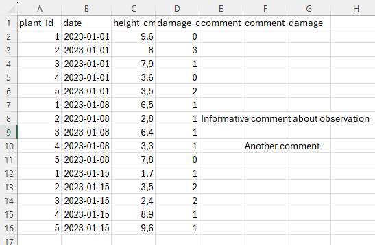

Illustration: Amrei Binzer-Panchal
Basic Biostatistics and Bioinformatics
Project organisation in R and RStudio
Swedish University of Agricultural Sciences, Alnarp
17 June 2024
Basic Biostatistics and Bioinformatics
A seminar series on the fundamentals
Organised by SLUBI and Statistics at SLU
Presentation of background and a practical exercise
Topics
- 17 June. Projects in R
- 1 July. Shiny
Topic suggestions are welcome
SLUBI
- SLU bioinformatics center
- Weekly online drop-in (Wednesdays at 13.00)
- slubi@slu.se, https://www.slubi.se
- Alnarp: Lizel Potgieter (Dept. of Plant Breeding)
Statistics at SLU
- SLU statistics center
- Free consultations for all SLU staff
- statistics@slu.se
- Alnarp: Jan-Eric Englund and Adam Flöhr (Dept. of Biosystems and Technology)
Today’s content
Projects in RStudio
Organisation of folders, scripts, output files
Code style
Some specific packages
Projects in RStudio
Created in File > New Project… > New directory
Links a basic folder to RStudio
Sets the folder as the working directory
- No need for
setwd("C:/folder/folder/folder")
Easy to switch between projects
Easy to share with others
Project options
Tools > Project Options…
I recommend to not restore RData at startup
New session will start with an empty environment
Easier to keep track of what objects are currently stored
Organisation of folders
Organise files in sub-folders
Suggested folders (source) could be
raw-datadatacodefigsresultsprose
Raw and processed data
raw-data
- Files created by others
- Requiring a process-step to be easier to use
data
- Tidier format
- General format if possible (
.csv)
Raw data

Cleaner data

Scripts
The code is collected in scripts
Multiple shorter scripts is usually clearer than few long ones
Divide scripts by purpose
process-raw-data.Rimport.Rexploratory-graphs.Rformal-tests-and-models.Rpresentable-graphs.R
Storing output
Given data and scripts, it should always be possible to reproduce any results
Still useful to export objects
- If certain results are sent to others
- If certain calculations are time consuming
R objects can be saved as .RDS files (or
.RData files)
Code style
Spaces after commas and around =
Clear names with words split by underscore _
The styler package can be to enforce the style guide
Script sections
Include a header explaining the goal of the script
Possibly also ongoing changes and dates
Load packages at the top
Split into sections with headers for each section
Section splits can be be created with #### or
----
Comment so that others can understand
RMarkdown allows for further mixing text and code
Packages for reproducibility and organisation
renv
- Problem: updates to R or packages can break the code
- renv keeps track of installed packages
- A project is run with a specific set of installed packages
targets
- Problem: changes to one part of a project can affect another part
- targets keeps track of the sections of a project
- Notes how changes in one part might change another part
renv
Any R session is connected to a library - a folder where packages are installed
The path can be shown with .libPaths()
Packages are loaded by looking in the library
library(package)
We mostly work with the general library
New packages or updates are used by all projects
The renv package creates a project-specific library
renv use
Initialisation
Select Use renv when creating a new project
Or run library(renv) and init() in a
current project
Install packages
Packages can be installed in the standard way
install.packages(name)
Saved in the renv folder in the project
Storing and restoring
Creating a snapshot
After installation running snapshot() saves the
current library
Listed in the renv.lock file
Restoring a snapshot
The library can be restored with restore()
Another user (or future you) can recreate the exact same environment
targets
A data analysis consists of some ingoing information (data) and a series of analysis steps
Some common steps
- import data
- create exploratory graphs
- estimate models and perform tests
- create presentable graphs
A step will depend on other steps
- graphs and models depend on import
- statistical graphs depend on model estimation
If an earlier step changes, later steps must be re-run
The targets package keeps track of step dependencies
Prevents missed changes as well as unnecessary steps
targets use
The basic use is to wrap analysis steps in functions
Example from package website
Target script
The relation between these functions is specified in a target script
_targets.r
library(targets)
source("functions.R")
tar_option_set(packages = c("readr", "dplyr", "ggplot2"))
list(
tar_target(file, "data.csv", format = "file"),
tar_target(data, get_data(file)),
tar_target(model, fit_model(data)),
tar_target(plot, plot_model(model, data))
)- Creates the
file- a name of an object - Get data using
get_data(). The input is file and the output is data - Apply
fit_model(). The input is data and the output is model - Apply
plot_model(). The input is model and data, and the output is plot
Running sections
This pipeline can be run with tar_make()
The first time this will run all steps
tar_visnetwork() shows a graph of the steps
If there are any changes the effects can be seen in
tar_visnetwork() or tar_outdated()
tar_make() will re-run the pipeline, but only the
relevant steps
The End
Next session July 1
- Shiny. The R system to create apps and interactive webpages